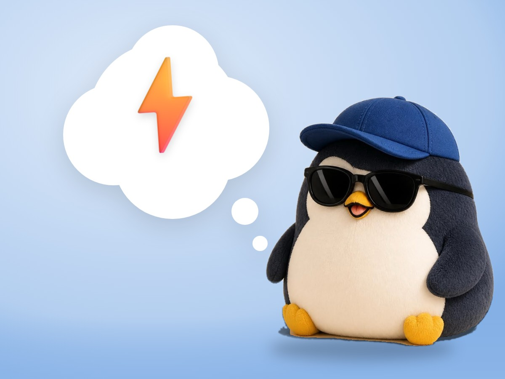

📝 DRAFT · 下書き — まだ本番に出していません · 下書き一覧
🐧 EVERYDAY LIFE⚡ 20 SEC
Walk a little faster every day, and many things get faster 💨

Everyday Pace
It seems people who do everything fast have a fast everyday pace.
The Puppy
There is also a story that a puppy that grows up in a slow and easy place becomes a slow and easy dog.
Quick Steps
So let's walk quickly every day, and go up the stairs with small, quick steps.
⚡ TRY IT
Find your "a little faster"
PACE
🐢 Very slow🐧 Usual⚡ A little faster💨 Brisk🚀 Way too fast
☕ To the cafe
15min
Feeling
🙂
"Slow and sleepy… The cafe is far."
This is your usual pace. Press + once.
Nice! Just a little faster, and your head wakes up too.
Brisk! The cafe comes fast.
Too fast! You get tired. "A little" is enough.
⭐ You found your good pace!
A Little Faster
Just by raising your pace a little, many things become faster.
📚 I learned this from the Japanese blog "Panda no Ondo".